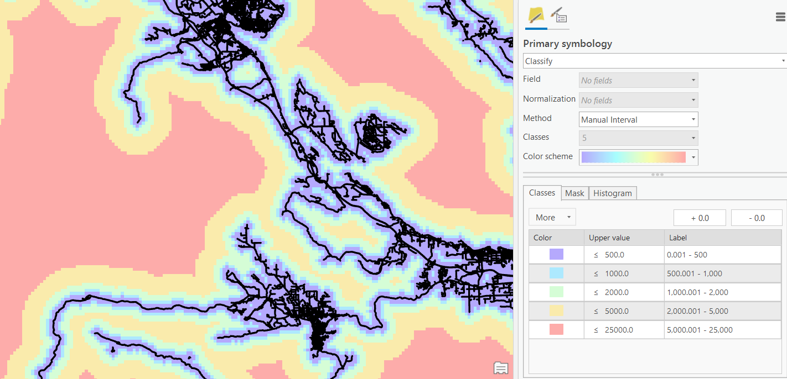
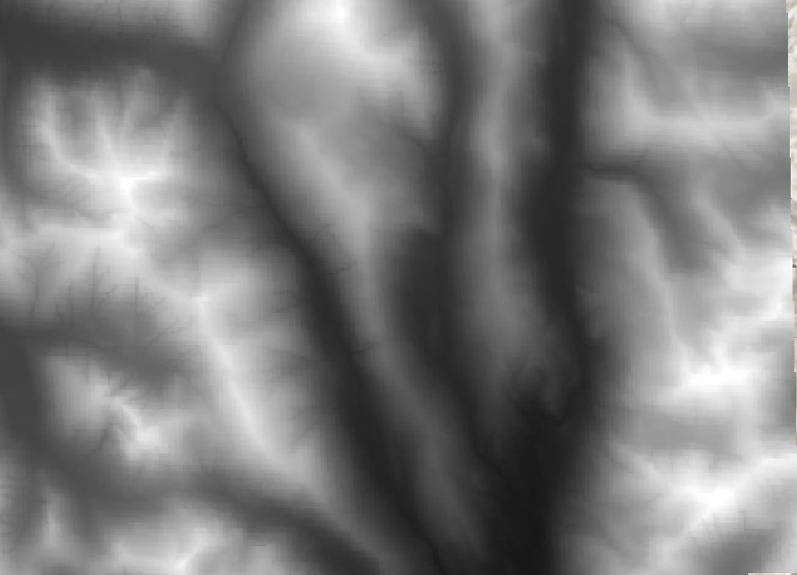
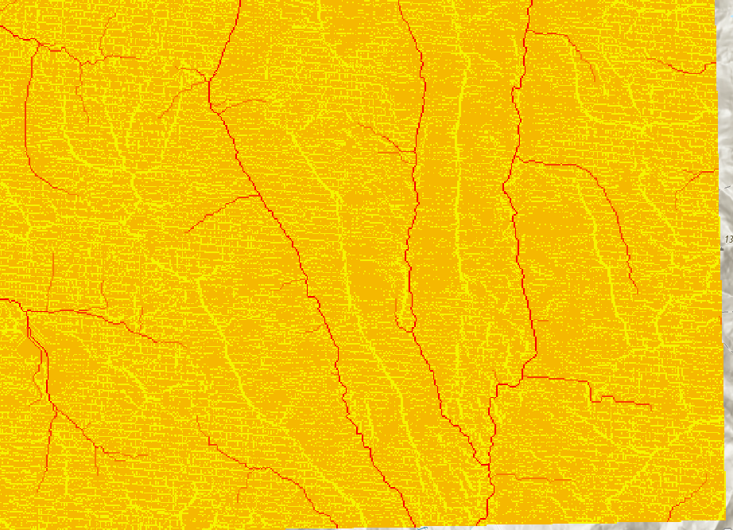

Raster Analysis Methods
Reading Break Makeup Lab
What time slot would you prefer for a makeup lab session? Not for credit, only answer if you are in Sierra's Wed or Fri Lab, select all that apply
- Monday the 7th 9:00-11:00
- Monday the 7th 10:00-12:00
- Monday the 7th 15:00-17:00
- None of these work for me :(
Raster Analysis Methods
Often our data is more "complex" than we need it to be. It is useful to parse, reclassify, and/or aggregate our data.
- Clip Raster: cuts raster down to a bounding box.
- Max N/S & E/W extent of another layer (vector or raster) or manually defined.
- Reclassify: reassign cell values.
- Mosaic: Combine multiple raster data sets into one.
- There are multiple approaches we can use.
Overlay
When we have multiple raster layers and we want to combine them to form a new output.
- We have a few tools we can use for this

Weighted Overlay
Weights inputs for suitability analysis or risk assessment.
- Inputs must be discrete numbers
- Manually define weights and scale
Raster Calculator
More general than weighted overlay.
- Outputs are more more straightforward
- Because inputs are more explicit
- Can do weighted overlay
TopHat Question 1
This tool allows you to define equations using raster layers as variables.
- Weighted Overlay
- Raster Calculator
- Reclassify
- Mosaic
Zonal Statistics
Calculate statistics (mean, max, etc.) using zones (regions) and output desired statistic by zone.
- The zone can be either a raster or vector layer.
- Zonal Statistics as Table generates a table containing multiple statistics by zone.
Proximity Analysis
- Euclidean Distance: use this tool to calculate distance from the nearest feature or raster layer.

Surface Analysis
These tools are specifically designed to analyze terrain surfaces (ie. Digital Elevation Models).
TopHat Question 2
The euclidean-distance tool lets you calculate the slope and aspect of a raster layer.
- True
- False
Raster Functions
ArcGIS Pro has an extensive toolkit of tools for more complex analyses.
- Many are beyond the scope of intro-level GIS
Hydrologic Modelling
The Hydrology toolset can be used to calculate stream flow.
- Use a DEM as an input
- Fill "sinks"
- Calculate flow direction
- Run flow accumulation
DEM Input
Accumulated stream flow output
Calculate NDVI
You can calculate NDVI directly in Arc
- Just give the red and near infrared bands from a satellite image
- e.g. Landsat8: Red (4), near infrared (5)
Image Classification
Classify a raster.
- Supervised or unsupervised
Image Classification
Classify a raster.
- Supervised or unsupervised
TopHat Question 3
This group of raster tools allows us delineate streams and drainage basins from a DEM.
- Hydrology Toolset
- Image Classification
- Kernel Density
- NDVI
TopHat Question 4
What will we be doing in GEOS 270 on Tuesday Nov 8th? (select all that apply)
- Lecture is scheduled as usual
- Optional lab help session in room 115
- Lecture is cancelled